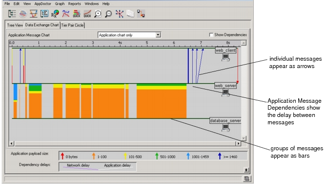

Application Message Chart The Application Message Chart uses the same conventions as the Network Packet Chart, with the following exceptions: • Arrows and bars represent application messages, not network packets. • The Application Message Chart can show dependencies, which describe the cause-and-effect relationship between different message transfers and their associated delays. Figure 14-3 Application Message Chart  The following table lists the elements unique to the Application Message Chart, shown above. Table 14-2 Elements of Application Message Chart Item Description Dependency lines Dependencies are divided into two components: • Network delay (shown as a purple line) • Application delay (shown as a white line) For more information, see Application Message Dependencies. Show Dependencies checkbox Specifies whether to show/hide dependencies in the Application Message Chart. Application message arrows This chart uses colored arrows to represent application messages instead of network packets, and uses the same coloring scheme to indicate the amount of application-layer data in each message Application message bars If messages are clustered too closely in time to be represented by individual arrows, the chart uses a solid bar to represent the cluster of messages.